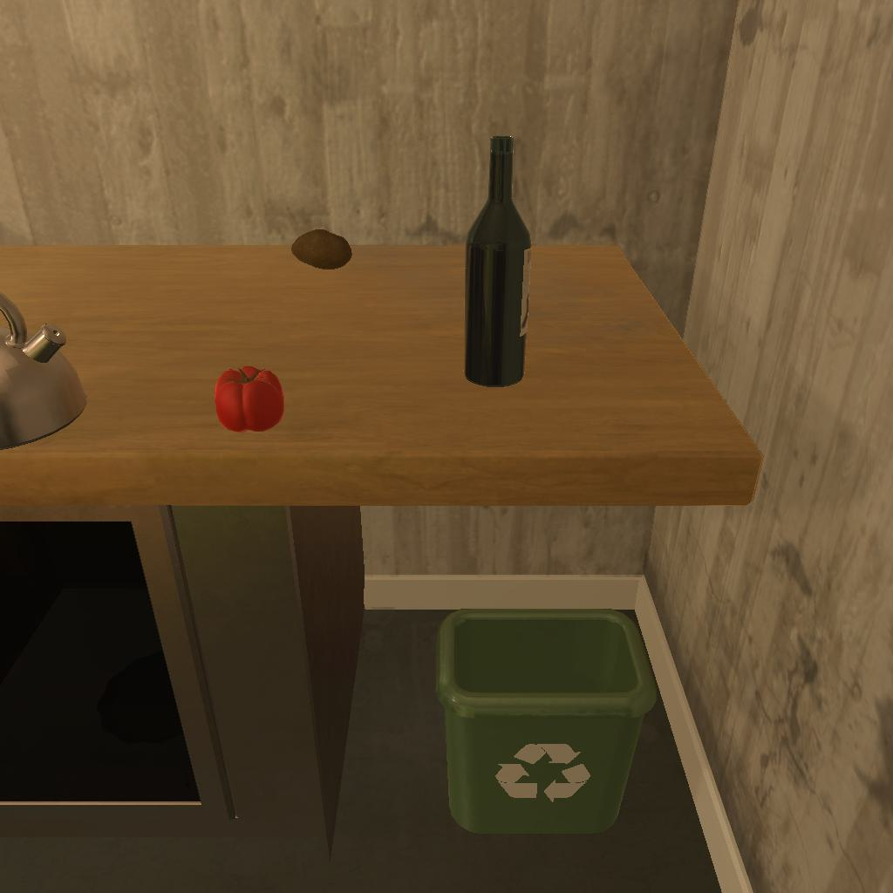

---------------------------------------------------------task: 26---------------------------------------------------------
--------------------------------------------------------------------------------------------------------------------------------------------------------------------
--------------------------------------------------------------------------------------------------------------------------------------------------------------------
Step:--------------------------------------------------------------------------7-------------------------------------------------------------------------------
----------------------------------------
VLM Prompt:
Image1:
Image2:
Image3:
**Instruction**
1. Analyze the provided images to identify all visible household objects and compare the difference between images (e.h. whether the object is opened or not and taken on hand or not), focusing on those relevant to the task description "find two kettle and put them in cabinet."
2. Use the analysis of images and the task hint "The agent must find an object of the desired type, pick it up, find the correct location to place it, put it down there, then look for another object of the desired type, pick it up, return to previous location, and put it down there with the other object." to answer the question: what is the most reasonable action in the choices for the task description "find two kettle and put them in cabinet"?
3. Decide and write the answer using the template: The answer is: (i): , where i is the real number. If there is no desired object in images, search every place based on **Initial Observation** to find the object. And if no one is exactly correct, choose a similar answer.
**Initial Observation**
You are in the middle of a room. Looking quickly around you, you can see countertop (1), coffeemachine (1), cabinet (1-4), drawer (1-8), sink (1), sinkbasin (1), garbagecan (1), fridge (1), microwave (1), dresser (1), sidetable (1)
**Answer Choices**
(1): go to countertop 1
(2): go to coffeemachine 1
(3): go to cabinet 2
(4): go to drawer 1
(5): go to sink 1
(6): go to sinkbasin 1
(7): go to garbagecan 1
(8): go to cabinet 4
(9): go to drawer 2
(10): go to fridge 1
(11): go to microwave 1
(12): go to dresser 1
(13): go to sidetable 1
(14): go to drawer 3
(15): go to drawer 4
(16): go to drawer 5
(17): go to drawer 6
(18): go to drawer 7
(19): go to drawer 8
(20): close cabinet 1
(21): take plate 1 from cabinet 1
(22): take mug 1 from cabinet 1
(23): take plate 2 from cabinet 1
(24): take dishsponge 1 from cabinet 1
(25): take tomato 1 from cabinet 1
(26): examine cabinet 1
**Answer**
Let's think step by step by following the instructions.
----------------------------------------
----------------------------------------
Original Response:
1. Analyzing the images:
- Image 1: There is a kettle on the countertop, a bottle, a tomato, and a kiwi.
- Image 2 and Image 3: There is a coffee machine with a mug on it, a stove burner, and a green sponge on the countertop.
Comparing the images, there is no significant change between Image 2 and Image 3; they are identical, indicating no action has been taken.
2. Task hint analysis:
The task requires finding two kettles and putting them in a cabinet. From the initial observation, we know the environment has several cabinets and a countertop where items are commonly placed. In Image 1, we can see a kettle on the countertop, which is relevant to our task.
3. Answer using the template:
Given that we can see a kettle in Image 1 and the task is to find two kettles and put them in a cabinet, the most reasonable first action would be to go where we visually confirmed the presence of a kettle. Since the kettle is on the countertop, the correct action would be:
The answer is: (1): go to countertop 1
After this, we would need to search other locations like cabinets, drawers, or any other places where a second kettle could be found based on the initial observation.
----------------------------------------
----------------------------------------
>>> Refine Original VLM Response and Get Pure Action: go to countertop 1
After this, we would need to search other locations like cabinets, drawers, or any other places where a second kettle could be found based on the initial observation
----------------------------------------
-----------------------------------------------------------------
Running time: 24.44167923927307 seconds
Total Money: 16.315219999999997
-----------------------------------------------------------------
-----------------------------------------------------------------
Text Observation:Nothing happens.
-----------------------------------------------------------------
UNSUCCEED